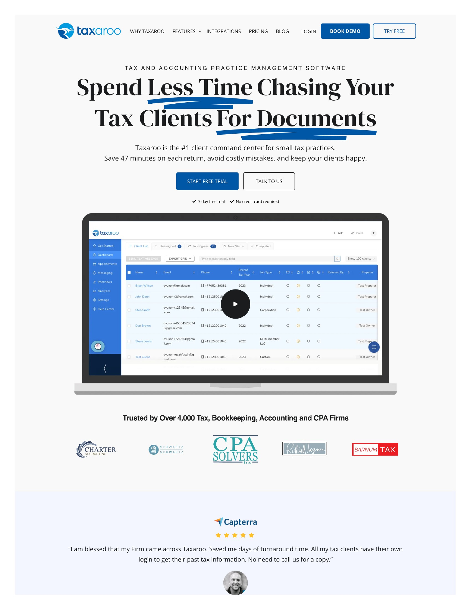

Taxaroo is practice management software for small tax and accounting firms. The product had been acquired, the worst bugs had been fixed, and the team was ready to scale. They had 4,000+ firms on the platform and a GTM team of six — three sales reps, a demand gen manager, a CRO, and me as the fractional marketing director.
The problem wasn’t the product. It was the story around it. The website read like every other SaaS homepage: “Unleash the Full Potential of Your Small Tax or Accounting Firm.” Streamline your workflow. Unlock AI. Grow your profits. It was speaking to everyone and connecting with no one. Every section led with features and capabilities rather than the problems those features actually solved.
The sales team was having real conversations with tax practice owners every day — and the language on those calls sounded nothing like the website. There was a gap between what the company knew about its buyers and what the website communicated. Nobody had done the work to close it.
Ran a series of workshops with the GTM team to extract what they already knew. Sales reps were talking to tax practice owners every day — they knew the pain points, the objections, the language buyers actually used. The positioning work translated that signal into a structured framework: who the ICP is, what problem Taxaroo solves in their words, how Taxaroo is different from the alternatives, and what the competitive context looks like. The output was a positioning canvas that gave the whole team — sales, demand gen, leadership — a shared foundation to work from.
Took the positioning canvas and rewrote the entire homepage. The old site led with capabilities: AI, workflow automation, team management. The new site led with the problem — chasing clients for paperwork — and organized every section around a specific pain that tax practice owners recognise. Features became proof points underneath the problem, not the headline. Surfaced the “47 minutes saved per return” claim as the lead metric. Pulled social proof — Capterra ratings, client testimonials — up into the first scroll so credibility showed up before the ask.
Fletch PMM framework applied to Taxaroo — ICP, competitive alternatives, differentiation pillars, and the messaging hierarchy that every piece of copy ladders up to.
Problem-first copy replacing the generic capability dump. Every section anchored to a pain point, with features as supporting evidence rather than the headline.
Small tax practice owners — not accountants broadly, not enterprise firms. The narrowing created clarity for sales conversations, ad targeting, and content direction.
Mapped the alternatives Taxaroo’s buyers actually evaluate — not just direct competitors, but spreadsheets, paper processes, and “doing it manually” — and built differentiation against each.
Restructured how testimonials and review ratings appear on the page — moved from a buried testimonial carousel to Capterra scores and named quotes visible in the first scroll.
The bridge between the positioning canvas and production copy — headline hierarchy, value prop statements, and the language rules the team can apply to sales decks, ads, and outbound.
Taxaroo’s sales team already knew what made the product valuable — they said it on calls every day. The website just wasn’t saying it. The positioning sprint didn’t invent new insights. It extracted what the team already knew, structured it into a framework, and translated it into copy that does the same job a sales rep does — except it works at scale, 24 hours a day, without needing someone on the other end of the call.
Book a 25-minute call. No pitch — just an honest conversation about what makes sense for your stage.
Book a call →